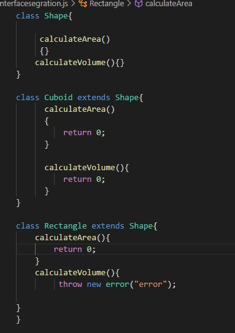

SOLID Principle
Introduction
SOLID is an acronym for the first five object-oriented design (OOD) principles by Robert C. Martin. The main purpose of introducing the concept of SOLID prinicple is to solve the issue of tight coupling during the development process. It is like standard which provides basis for code reusability, extensibility and easy code maintainability. The acronym SOLID stands for
1. Single Responsibility
The Single Responsibility Principle states that a class should have only one job to accomplish. And a class mustn't have more than one reason to change.
It makes the software easier to implement andprevent unexpected
side effects of future change. If there would not
have been single responsibility the principle then the job of
developer might become the messy job coz if single class solves
multiple responsibilities and the software needs to get updated in
the future then it becomes so complex to update the codebase due to
multiple responsibilities for a single class. Lets take the example
to see the difference between code following Single Responsibility
Principle and the code not following Single Responsibility
Principle. At first have a look at example that doesnot follows
Single Responsibility Principle and we will solve the issue
afterwards using Single Responsibilty Prinicple.
The above code snippets show a class performing multiple responsibilities as the class HttpClient is performing two different operations,
one is fetching the data from the server and returning
response and the same class is also handling the error which
violates the Single Responsibility Principle. Let's see another
example where there are two different classes to perform the
HttpClient operation and to handle all the possible errors or
warnings.

These two figure shows how we solve the issue of multiple responsibilities in the same class by creating two different
separate to complete two different responsibilities. As the class
HttpClient performs the operations related to fetching, posting,
or deleting the data from the server and the class ErrorHandler
performs the operations related to handling all the possible
errors
2. Open for extension and closed for modification
Open for extension and closed for modification is also one among five most important design principle which states that,
"A class isclosed, since it may be compiled, stored in a library,
baselined,and used by client classes. But it is also open, since any new
class may use it as parent, adding new features. When a descendant
class is defined, there is no need to change the original or to
disturb its clients.”
Let's take an example to be more clear about the concept using code snippets.
Explaining the concept of open-closed principle using above two code snippets.
In fig.1 the simple calculator performs only two operation, they are addition and subtraction.
If user initial requirement is for only those two operation then the developer can provide solution
to the user with these operation and the system get build and launched for initial phase. Once the system
gets launched then we are not allowed to modify those operations but we can add other new operations like
multiplication, divison and so on with out disturbing the old fucntion which are already in the subject as Showing
in fig.2 .
3. Liskov Substitution Principle
The principle defines that objects of a superclass shall be replaceable with objects of its subclasses without breaking the application. That requires the objects of your subclasses to behave in the same way as the objects of your superclass.
An overridden method of a subclass needs to accept the same input parameter
values as the method of the superclass. That means you can implement less
restrictive validation rules, but you are not allowed to enforce stricter ones
in your subclass. Otherwise, any code that calls this method on an object of the
superclass might cause an exception, if it gets called with an object of the subclass.
Let's take an example to make the concept little bit more clear.
Explaining the concept of Liskov Substitution Principle using above code snippets.
In above code snippets I am taking class TwoDShape as super class and
subclass Rectangle is extending the base call TwoDShape to implement base
class feature. Another subclass class Square inheriting the feature of class
Rectangle can also access the properties of superclass TwoDShape. Class Square
accessing the function findArea of superclass TwoDShape validates the Liskov
Substitution Principle.
4. Interface Segregation Principle
Interface Segregation Principle Is one of the most important design principle among first five design principle which states,
Instead of creating a general interface to solve various problems, create
Many different small interfaces, that can solve a specific problem which makes the code more reusable and
more extensible. As we know every method or function inside interface needs to be implemented inside
the child class which implements that interface and some methods might be useful and some
are not which increases the code redundant as the same piece of code are repeated again and again which are of
no use.

fig: Showing validating Interface Segregation Principle
Explaining the concept of Liskov Substitution Principle using above code snippets.
In above code snippets I am taking class TwoDShape as super class and
subclass Rectangle is extending the base call TwoDShape to implement base
class feature. Another subclass class Square inheriting the feature of class
Rectangle can also access the properties of superclass TwoDShape. Class Square
accessing the function findArea of superclass TwoDShape validates the Liskov
Substitution Principle.